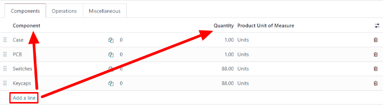

Configuración del producto a fabricar¶
Para fabricar un producto con la aplicación Fabricación de Odoo, el producto debe estar configurado de forma correcta. Esto consiste en habilitar la ruta Fabricación y configurar una lista de materiales (LdM) para el producto. Una vez que haya completado estos pasos, puede seleccionar el producto al crear una nueva orden de fabricación.
Activar la ruta de fabricación¶
La ruta de fabricación se activa para cada producto desde su propia página. Vaya a y seleccione un producto existente o cree uno nuevo con el botón correspondiente.
En la página del producto, seleccione la pestaña Inventario y active la casilla Fabricación en la sección Rutas. Esto le indica a Odoo que el producto se puede fabricar.

Configurar una lista de materiales (LdM)¶
A continuación, debe configurar una lista de materiales (LdM) para el producto para que Odoo sepa cómo se fabrica. Una LdM es una lista de los componentes y operaciones que se necesitan para fabricar un producto.
Para crear una LdM para un producto específico, vaya a y seleccione el producto. En la página del producto, haga clic en el botón inteligente Lista de materiales en la parte superior de la página, luego seleccione Nuevo para configurar una nueva LdM.

En |a LdM, el campo Producto se completa en automático. Especifique el número de unidades que produce la LdM en el campo Cantidad.
Para agregar un componente a la LdM seleccione la pestaña Componentes y haga clic en Agregar una línea, elija un componente del menú desplegable Componente y escriba la cantidad en el campo correspondiente. Continúe agregando componentes en nuevas líneas hasta que haya terminado de incluir todos.
A continuación, seleccione la pestaña Operaciones, haga clic en Agregar una línea y aparecerá la ventana emergente Crear operaciones. Especifique el nombre de la operación a agregar (por ejemplo, ensamblaje, corte, etc.) en el campo correspondiente y, en el menú desplegable Centro de trabajo, seleccione el lugar donde se realizará la operación. Por último, haga clic en Guardar y cerrar para terminar de agregar operaciones o en Guardar y crear nuevo para agregar más.
Importante
La pestaña Operaciones solo aparece si la función Órdenes de trabajo está activada. Vaya a y seleccione la casilla Órdenes de trabajo.

Más información
La sección anterior proporciona instrucciones para crear una lista de materiales básica que permita fabricar un producto en Odoo. Sin embargo, no es un resumen exhaustivo de todas las opciones de configuración disponibles. Para obtener más información sobre las listas de materiales, consulte la documentación sobre cómo crear una lista de materiales.